03_data
Bruce Wang
11/11/2019
library(tidyverse)## -- Attaching packages --------------------------------------------------------- tidyverse 1.2.1 --## v ggplot2 3.2.1 v purrr 0.3.2
## v tibble 2.1.3 v dplyr 0.8.3
## v tidyr 0.8.3 v stringr 1.4.0
## v readr 1.3.1 v forcats 0.4.0## -- Conflicts ------------------------------------------------------------ tidyverse_conflicts() --
## x dplyr::filter() masks stats::filter()
## x dplyr::lag() masks stats::lag()dfAMPeck <- read_rds("data/dfAMPeck.rds")
dfMidDay <- read_rds("data/dfMidDay.rds")K-means Cluster Analysis
# Setup Cluster variables
set.seed(3)
cluster_variables <- c("TotalVolume", "SplitFailures", "ArrivalsOnGreen", "PlatoonRatio", "TotalRedLightViolations")
# Create Table without NA Volue
complete_dfAMPeak <- na.omit(dfAMPeck)
complete_dfMidDay <- na.omit(dfMidDay)
# AMPeak Normal and Scaled clusters
clusters_AMPeak <- complete_dfAMPeak %>%
select(cluster_variables) %>%
kmeans(centers = 5)
scaled_clusters_AMPeak <- complete_dfAMPeak %>%
select(cluster_variables) %>%
mutate_all(scale) %>% # want to scale the data to make it normalized for kmeans
kmeans(centers = clusters_AMPeak$centers %>% scale() )
clustered_dfAMPeak <- complete_dfAMPeak %>%
mutate(cluster = clusters_AMPeak$cluster,
scaled_cluster_AMPeak = scaled_clusters_AMPeak$cluster)
# MidDay Normal and Scaled clusters
clusters_MidDay <- complete_dfMidDay %>%
select(cluster_variables) %>%
kmeans(centers = 5)
scaled_clusters_MidDay <- complete_dfMidDay %>%
select(cluster_variables) %>%
mutate_all(scale) %>% # want to scale the data to make it normalized for kmeans
kmeans(centers = clusters_MidDay$centers %>% scale() )
clustered_dfMidDay <- complete_dfMidDay %>%
mutate(cluster = clusters_MidDay$cluster,
scaled_cluster_MidDay = scaled_clusters_MidDay$cluster)How different are the clusterings? Turns out they are very different!
clustered_dfAMPeak %>%
group_by(cluster, scaled_cluster_AMPeak) %>%
tally() %>%
spread(scaled_cluster_AMPeak, n, fill = 0) %>%
knitr::kable()| cluster | 1 | 2 | 3 | 4 | 5 |
|---|---|---|---|---|---|
| 1 | 499 | 5 | 13 | 1 | 5 |
| 2 | 142 | 552 | 0 | 0 | 26 |
| 3 | 218 | 186 | 65 | 0 | 42 |
| 4 | 0 | 0 | 2 | 162 | 0 |
| 5 | 676 | 408 | 49 | 0 | 70 |
Going forward, we will make only plots using the scaled clutering algorithm.
Distributions
We want to try to categorize the clusters based on their values for specific performance measures to see if the clustering can tell us, for instance, if an intersection is performing well or poorly based on its cluster assignment alone.
SplitFailures AMPeak
clustered_dfAMPeak %>%
ggplot(aes(x = SplitFailures)) + geom_bar() + facet_wrap(~scaled_cluster_AMPeak)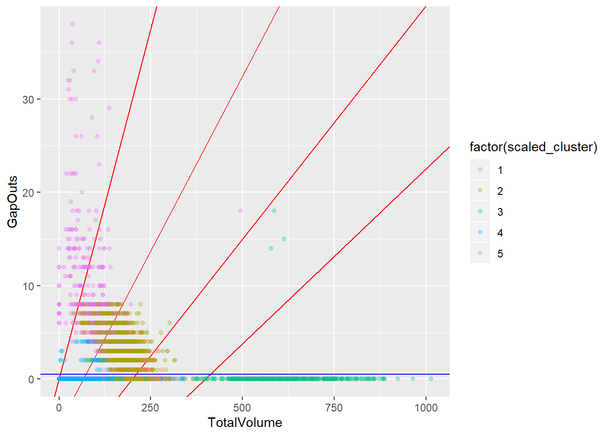
SplitFailures MidDay
clustered_dfMidDay %>%
ggplot(aes(x = SplitFailures)) + geom_bar() + facet_wrap(~scaled_cluster_MidDay)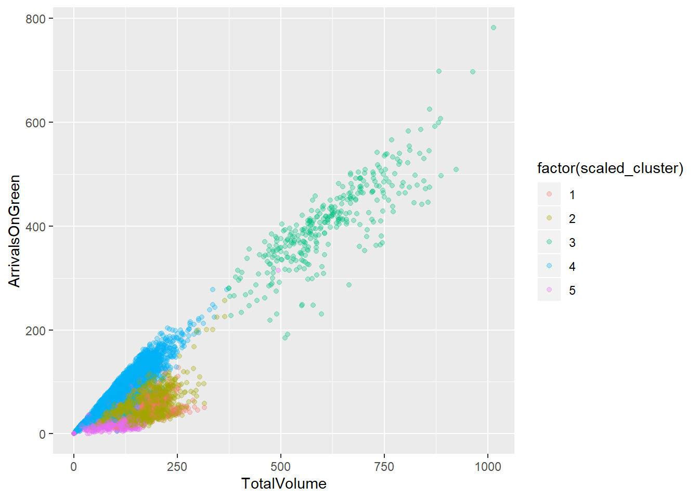 Now let’s make a table where the percent of cycles ending in split failure by cluster can be plotted.
clustered_dfAMPeak %>%
group_by(scaled_cluster_AMPeak) %>%
summarize(
`0` = sum(ifelse(SplitFailures == 0, TRUE, FALSE)) / n(),
`0- 3` = sum(ifelse(SplitFailures <= 3, TRUE, FALSE)) / n(),
`> 3` = sum(ifelse(SplitFailures > 3, TRUE, FALSE)) / n()
)## # A tibble: 5 x 4
## scaled_cluster_AMPeak `0` `0- 3` `> 3`
## <int> <dbl> <dbl> <dbl>
## 1 1 0.920 1 0
## 2 2 0.935 1 0
## 3 3 0.0233 0.791 0.209
## 4 4 0.896 1 0
## 5 5 0.797 1 0clustered_dfMidDay %>%
group_by(scaled_cluster_MidDay) %>%
summarize(
`0` = sum(ifelse(SplitFailures == 0, TRUE, FALSE)) / n(),
`0- 3` = sum(ifelse(SplitFailures <= 3, TRUE, FALSE)) / n(),
`> 3` = sum(ifelse(SplitFailures > 3, TRUE, FALSE)) / n()
)## # A tibble: 5 x 4
## scaled_cluster_MidDay `0` `0- 3` `> 3`
## <int> <dbl> <dbl> <dbl>
## 1 1 0.640 0.995 0.00506
## 2 2 0.100 0.783 0.217
## 3 3 0.812 0.976 0.0242
## 4 4 0.00760 0.266 0.734
## 5 5 0.815 0.999 0.000978clustered_dfAMPeak %>%
group_by(scaled_cluster_AMPeak) %>%
summarize(
`0` = sum(ifelse(ArrivalsOnRed == 0, TRUE, FALSE)) / n(),
`1- 3` = sum(ifelse(ArrivalsOnRed< 3, TRUE, FALSE)) / n(),
`> 4` = sum(ifelse(ArrivalsOnRed > 4, TRUE, FALSE)) / n()
)## # A tibble: 5 x 4
## scaled_cluster_AMPeak `0` `1- 3` `> 4`
## <int> <dbl> <dbl> <dbl>
## 1 1 0 0.0156 0.949
## 2 2 0.0547 0.125 0.840
## 3 3 0 0 1
## 4 4 0 0 1
## 5 5 0 0 1Plots
I wonder if we can code up some kind of discrimination function based on the clusters. Like, draw the blue line so it contains 80% of points in cluster 1.
# blue_level <- clustered_df %>%
# filter(scaled_cluster == 1) %>%
# select(scaled_cluster, ForceOffs) %>%
# group_by(ForceOffs) %>% tally() %>%
# mutate(p = n / sum(n),
# cump = cumsum(p)) %>%
# filter(cump < 0.85) %>%
# slice(nrow(.)) %>% .$ForceOffs
#
# ggplot(clustered_df, aes(x = TotalVolume, y = ForceOffs, color = factor(scaled_cluster))) +
# geom_abline(slope = 30/200, intercept = 0, col = "red")+
# geom_abline(slope = 30/400, intercept = -5, col = "red")+
# geom_abline(slope = 30/600, intercept = -10, col = "red")+
# geom_abline(slope = 30/800, intercept = -15, col = "red")+
# geom_hline(yintercept = blue_level, col = "blue")+
# geom_point(alpha = 0.3)
# ggplot(clustered_df, aes(x = TotalVolume/TotalCycles, y = ForceOffs/TotalCycles, color = factor(scaled_cluster))) +
# geom_point(alpha = 0.3)PlatoonRatio VS PercentAOG AMPeak
ggplot(clustered_dfAMPeak, aes(x = PlatoonRatio, y = PercentAOG, color = factor(scaled_cluster_AMPeak))) +
# geom_abline(slope = 30/200, intercept = 0, col = "red")+
# geom_abline(slope = 30/400, intercept = -5, col = "red")+
# geom_abline(slope = 30/600, intercept = -10, col = "red")+
# geom_abline(slope = 30/800, intercept = -15, col = "red")+
geom_point(alpha = 0.3)+
theme_bw()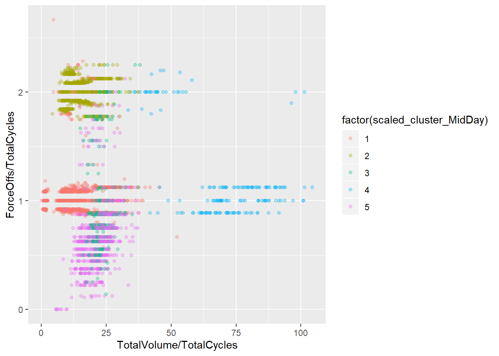
PlatoonRatio VS PercentAOG MidDay
ggplot(clustered_dfMidDay, aes(x = PlatoonRatio, y = PercentAOG, color = factor(scaled_cluster_MidDay))) +
# geom_abline(slope = 30/200, intercept = 0, col = "red")+
# geom_abline(slope = 30/400, intercept = -5, col = "red")+
# geom_abline(slope = 30/600, intercept = -10, col = "red")+
# geom_abline(slope = 30/800, intercept = -15, col = "red")+
geom_point(alpha = 0.3)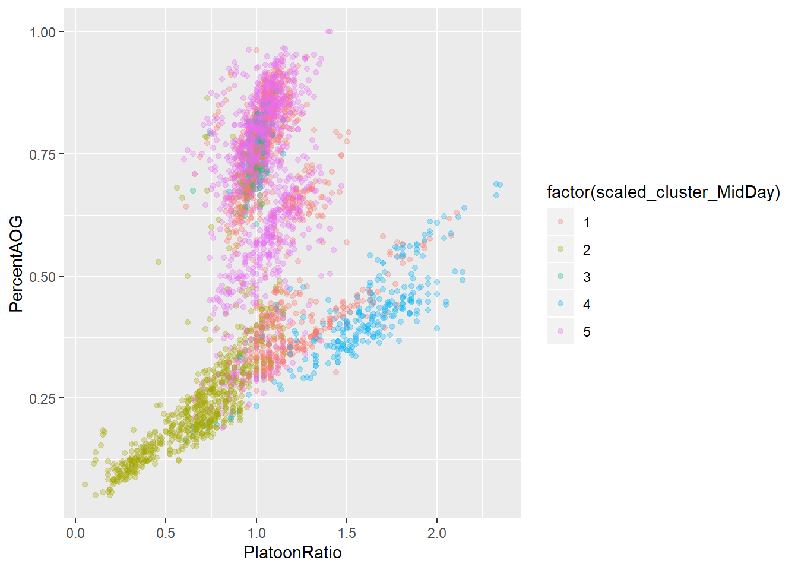
TotalVolume VS PercentAOG AMPeak
ggplot(clustered_dfAMPeak, aes(x = TotalVolume, y =PercentAOG, color = factor(scaled_cluster_AMPeak))) +
geom_point(alpha = 0.3)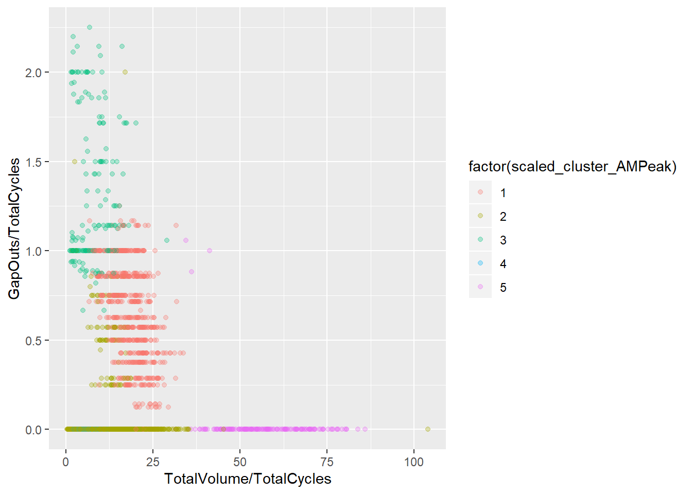
TotalVolume VS PercentAOG MidDay
ggplot(clustered_dfMidDay, aes(x = TotalVolume, y =PercentAOG, color = factor(scaled_cluster_MidDay))) +
geom_point(alpha = 0.3)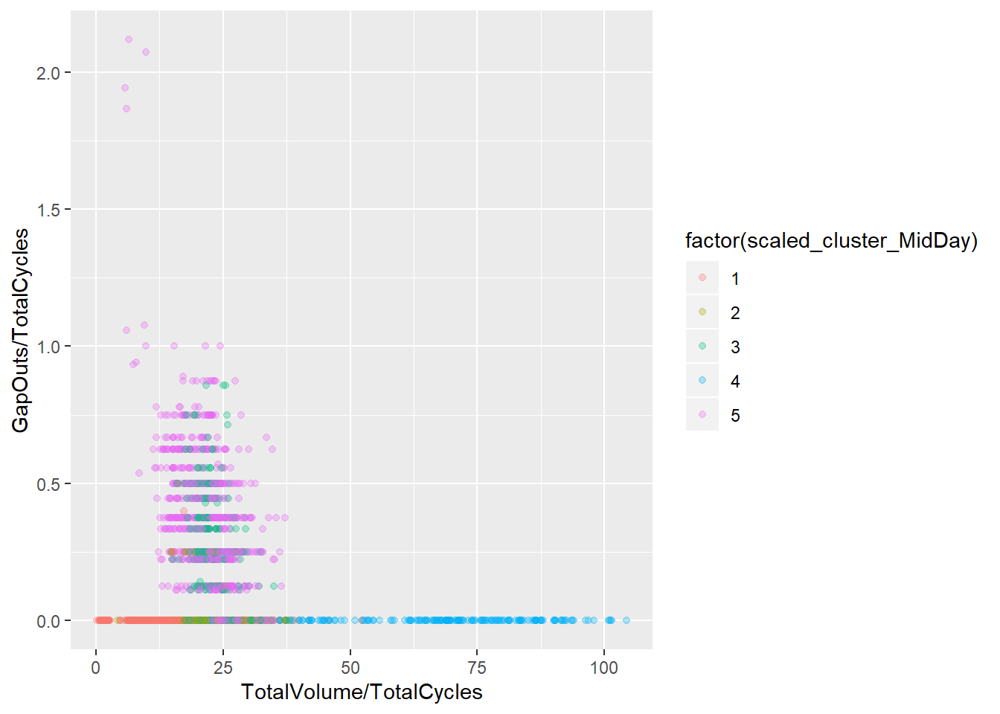
TotalVolume VS SplitFailures AMPeak
ggplot(clustered_dfAMPeak, aes(x = TotalVolume/TotalCycles, y = SplitFailures/TotalCycles, color = factor(scaled_cluster_AMPeak)))+ geom_point(alpha = 0.3)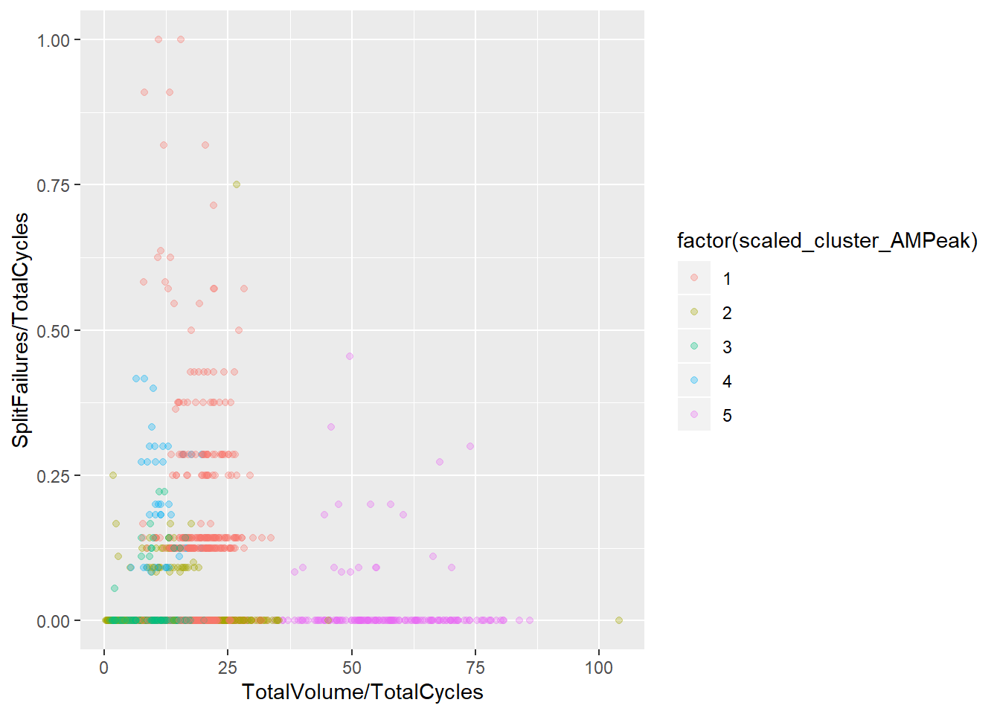
TotalVolume VS SplitFailures MidDay
ggplot(clustered_dfMidDay, aes(x = TotalVolume/TotalCycles, y = SplitFailures/TotalCycles, color = factor(scaled_cluster_MidDay)))+ geom_point(alpha = 0.3)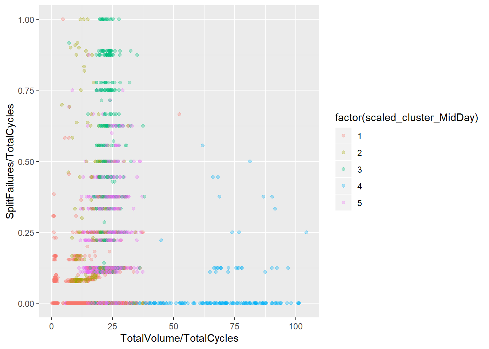
PlatoonRatio VS Split Failures AMPeak
ggplot(clustered_dfAMPeak, aes(x = PlatoonRatio, y = SplitFailures/TotalCycles, color = factor(scaled_cluster_AMPeak))) +
# geom_abline(slope = 30/200, intercept = 0, col = "red")+
# geom_abline(slope = 30/400, intercept = -5, col = "red")+
# geom_abline(slope = 30/600, intercept = -10, col = "red")+
# geom_abline(slope = 30/800, intercept = -15, col = "red")+
geom_point(alpha = 0.3)
PlatoonRatio VS Split Failures AMPeak
ggplot(clustered_dfMidDay, aes(x = PlatoonRatio, y = SplitFailures/TotalCycles, color = factor(scaled_cluster_MidDay))) +
# geom_abline(slope = 30/200, intercept = 0, col = "red")+
# geom_abline(slope = 30/400, intercept = -5, col = "red")+
# geom_abline(slope = 30/600, intercept = -10, col = "red")+
# geom_abline(slope = 30/800, intercept = -15, col = "red")+
geom_point(alpha = 0.3)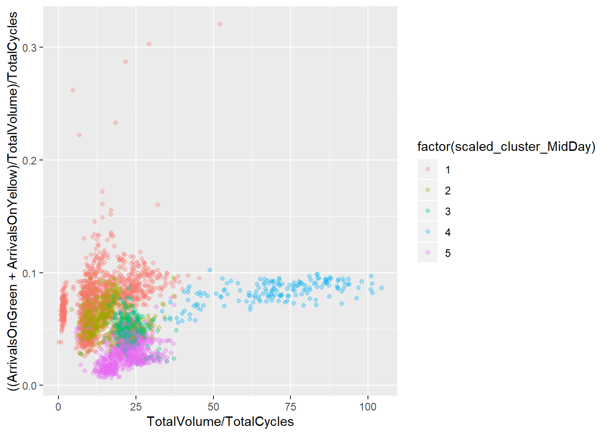
TotalVolume VS TotalRedLightViolations AMPeak
ggplot(clustered_dfAMPeak, aes(x = TotalVolume/TotalCycles, y = TotalRedLightViolations/TotalCycles, color = factor(scaled_cluster_AMPeak))) +
geom_point(alpha = 0.3)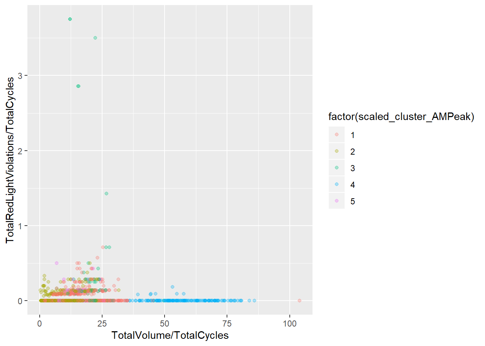
TotalVolume VS TotalRedLightViolations MidDay
ggplot(clustered_dfMidDay, aes(x = TotalVolume/TotalCycles, y = TotalRedLightViolations/TotalCycles, color = factor(scaled_cluster_MidDay))) +
geom_point(alpha = 0.3)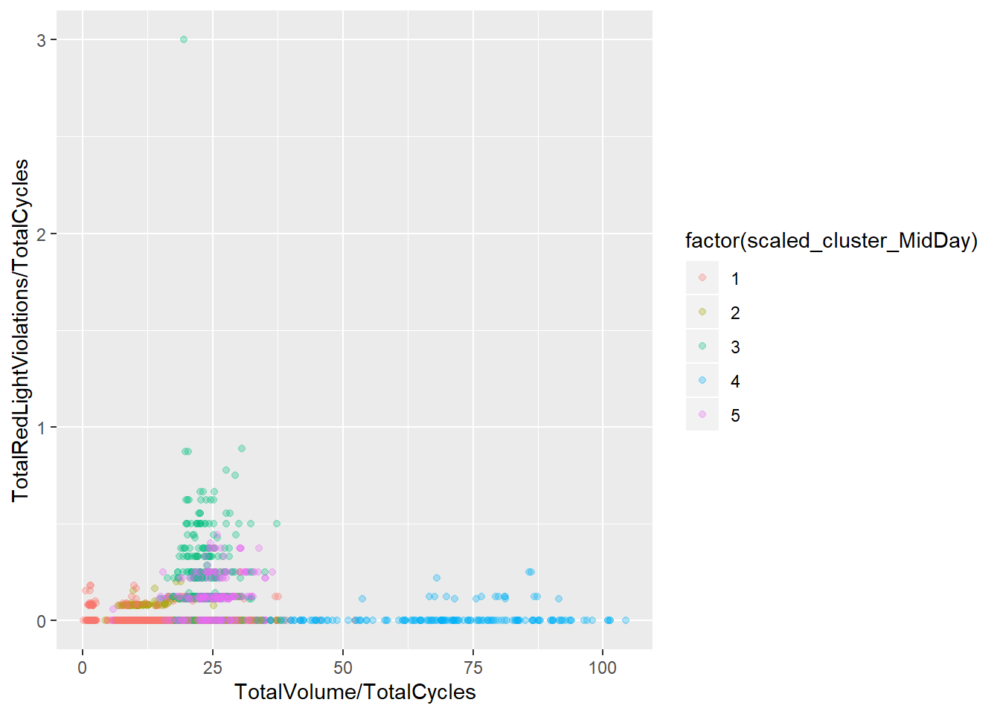